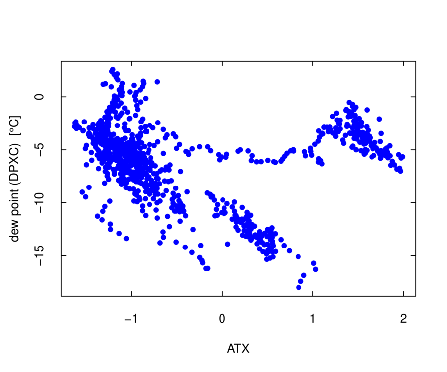

When constructing plots, the use of “pipes” makes the logic clear
and is recommended, so that is described first. All the code sequences
described here can be implemented by saving the result from each step
and then providing it to the next step, but pipes support the transmission
of the result of a calculation to the next stage in the calculation
without the need for intermediate storage. They are supported using
the “%>%” argument, which is enabled by the “magrittr” package
for R. Perhaps the strongest argument for using pipes is that they
make the logic of plot construction clear. You start with a data.frame,
optionally construct new variables, make appropriate selection of
variables and the time interval, apply filters to accept only data
meeting particular tests, and then construct the plot using the resulting
tailored data.frame. Here is an example, where the data.frame is piped
to “select()” (part of the dplyr package that passes on only the
listed variables) and where the result is then piped to “Ranadu::selectTime()”
where only the specified time range is transmitted forward. The result
is finally piped to Ranadu::plotWAC(), where the first argument is
a data.frame. That is supplied by the pipe. The result is shown in
Fig. ![[*]](crossref.png) . Alternately, ggplotWAC() could be used
to produce a similar result. In addition to showing the explicit steps
in the processing chain, code like this ensures that the plot will
be constructed the same way if the code is re-used or moved.
. Alternately, ggplotWAC() could be used
to produce a similar result. In addition to showing the explicit steps
in the processing chain, code like this ensures that the plot will
be constructed the same way if the code is re-used or moved.
library(magrittr)
Ranadu::getNetCDF(fname, Variables) %>% ## load the data.frame
dplyr::filter(TASX > 90) %>% ## limit based on airspeed
dplyr::select(Time, ATX, DPXC) %>% ## select the variables to plot
Ranadu::Rmutate(DPD = ATX - DPXC) %>% ## add the dewpoint-depression DPD
Ranadu::selectTime(220500, 221500) %>% ## set the time range
Ranadu::plotWAC(col=c('blue', 'forestgreen', 'black')) ## construct the plot
Figure:
Example of a figure generated using pipes. The variables are air temperature (ATX), dew point temperature (DPXC), and a new generated variable representing the dew point depression (DPD=ATX-DPXC). From WECAN research flight 6, 3 August 2018.
|
More information on some of the utility functions used or available
when constructing plots is provided in the following list:
- dplyr::filter(): This function is used to limit the range
of accepted values. The arguments are a data.frame (provided above
by the pipe) and a logical statement. Only rows for which the specified
test is true are included in the resulting data.frame. An example
where a statement like this might be useful is when fitting to determine
the sensitivity coefficients for angle of attack, because it is useful
to exclude slow flight when the gear and/or flaps might be deployed.
Be sure to use the version from dplyr; the filter functions from the
packages “stats” or “signal” have different behavior. An alternative
method of creating a subset is to use the notation “Data[Data$TASX
> 90, ]”. The disadvantage of this method and of the “select(Data,
Data$TASX > 90)” function provided by base-R is that variable attributes
are lost.4.1
- dplyr::select(): This function creates a subset data.frame
with only the desired variables. The desired list of names can be
specified either as character names (with quotes) or variable names
(without quotes). This also has the advantage over the “[]”
or “[[]]” methods of subsetting that attributes of the
data.frame and the variables are preserved.
- Ranadu::Rmutate( ): This function adds new variables to the
data.frame according to formulas specified in the second argument.
In this processing chain, the first argument is the data.frame provided
by the pipe. This calls the routine dplyr::mutate() but then,
because that function does not preserve variable attributes, it transfers
attributes from the input to the output data.frame. New variables,
however, have no attributes (even the “Dimension” attribute) so
the resulting data.frame has some limitations, notably not being accepted
by “makeNetCDF( )”.
- Ranadu::selectTime( ): This function limits the time range
of the resulting data.frame to be between the times that are specified
in HHMMSS format (hours, minutes, seconds). This is equivalent to
using “dplyr::filter( )” with limits on the accepted times, but
it avoids the need to provide those times in the POSIXct format used
by Ranadu data.frames. It preserves attributes and is suitable for
use in pipes.
- Ranadu::Rsubset( ): This is not used in the present example
but could be. It accepts start and end times like “selectTime”,
selects variables like “dplyr::select”, and imposes limitations
on the data like “dplyr::filter( )”, so several functions could
be combined in one step: Ranadu::getNetCDF(fname, Variables) %>%
Ranadu::Rsubset(220500, 221500, c('ATX', 'DPXC')) %>% plotWAC( ).
This function also preserves attributes in the modified data.frame.
“Ranadu::plotWAC( )” is designed primarily for time-series plots,
but scatterplots can also be generated. In that case, the first two
variables in the data.frame should be the variables for the scatterplot,
not the Time variable, and an explicit label “xlab=xxx” should
be supplied. Here is an example:
Data %>% selectTime(220000, 221500) %>%
dplyr::select(ATX, DPXC) %>%
plotWAC(xlab='ATX', type='p')
Figure:
Example scatterplot.

|